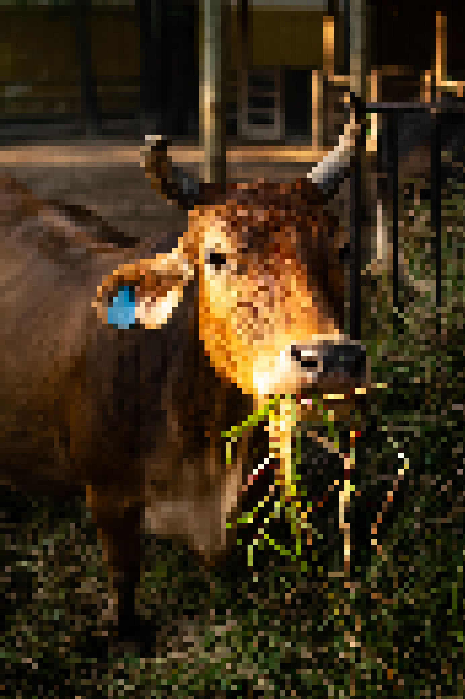
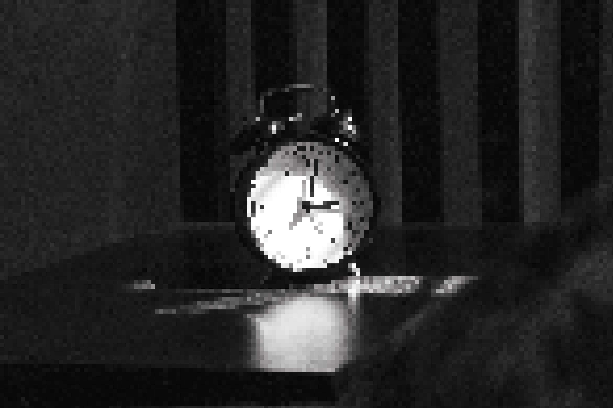
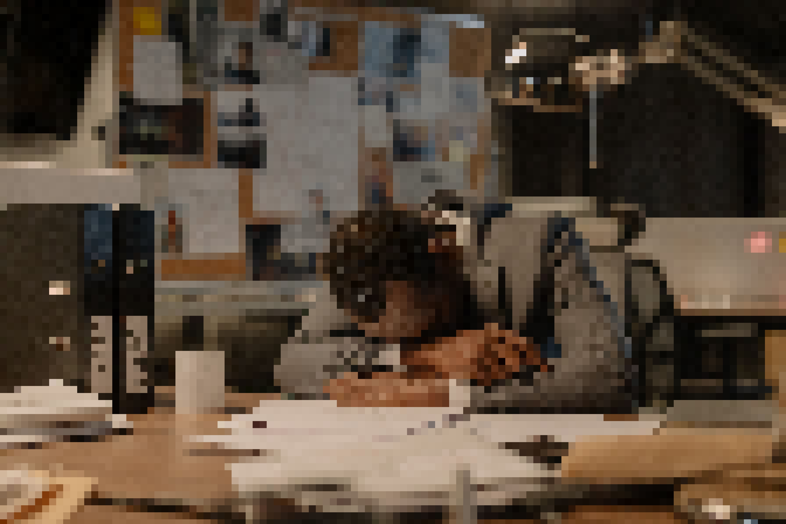

Biology
No. There is NO WAY that THING is going in your mouth.
You swing your hand and throw the berry aside, then lay down in silence for a few minutes. You turn your head. The grass looks really green today.
Do I have to..?
That's the thought that crossed your mind before sucking up your dignity. You rip out a chunk of grass from the ground and slowly munch on it.

Is this what cows feel like?Oh, whatever. Just as long as you live.
After about 5-ish minutes of feeling like a cow, you decide it's time for bed. It's been a long day.
You search around for leaves to create a makeshift bed that you can rest on for the night.
Finally shutting your eyes, you drift fast asleep...

You can feel the slight breeze against your skin. The calming sound of the wind slowly turns into robotic beeping noise, and the back of your neck starts to ache. The beeping noise grows louder, stronger, faster, and irratates you to no end as it turns to an almost siren-like alarm.Can someone shut this thing off?
You groan and finally open your eyes, only to see... an alarm?

What..what the heck is this?
As you look around, you notice the that grass is gone, the leaves are no longer there, and the night sky wasn't shining on your face anymore. Your head was on a pile of papers...lab...papers?
You glance at the contents of the page.
Biology? Soil erosion demo? Water...what?
What was all this? You could swear that just a moment ago you were snoozing away on a leaf-bed, so why are you here? What are you doing in this pla--
You pause. This was...your dorm room... and your a student majoring in Enviromental Science.
Sigh. Back to work you go, I guess.